2130B39 GEAR SELECTION SOLENOID UNIT R R WITH SOLENOID UNIT COVER REMOVED
- Path
- Procedures > 21 GEARBOX UNIT > 2130 AUTOMATIC TRANSMISSION WITH DIFFERENTIAL > 2130B AUTOMATIC TRANSMISSION COMPONENTS > 2130B39 GEAR SELECTION SOLENOID UNIT R R WITH SOLENOID UNIT COVER REMOVED
- Kind
- repair procedure (removal / refitting; the operation number is the code)
- Applies to
- engines: 2.0 16v, 3.0 24V V6, 2.0 16V JTD; all production periods
- Interactive page
- https://sloeber94.github.io/elrnDB-fUlss/en/#/179007252
Applies to: engines: 3.0 24V V6; all production periods
 Removing
Removing
 Refitting
Refitting1. Disconnect the electrical connection from the solenoid valve assembly.
 | Description | Connector |
|---|---|---|
1 | Automatic transmission solenoid valves |
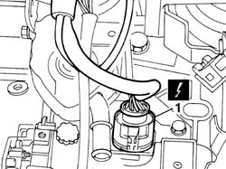
Applies to: engines: 3.0 24V V6; all production periods
1. release the clip securing the solenoid valve assembly connector to the gearbox casing.
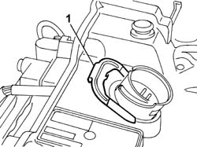
Applies to: engines: 3.0 24V V6; all production periods
1. Undo the bolts (1a) fixing the solenoid valve assembly which can be recognized by their larger diameter head and the bolt (1b) fixing the gearbox input speed sensor (1c).
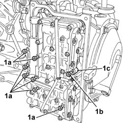
Applies to: engines: 3.0 24V V6; all production periods
1. Disconnect the electrical connection for the speed sensor (1a), release the gearbox input speed sensor (1b) from the casing and, working carefully, partly detach the solenoid valve assembly (1c) from the gearbox.
- 1a - Gearbox input speed sensor K078
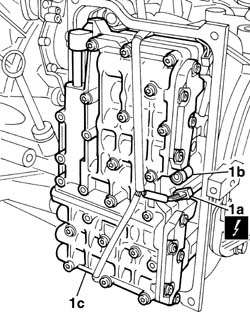
Applies to: engines: 3.0 24V V6; all production periods
1. Release the solenoid valve assembly connector (1a), disconnect the electrical connection for the gearbox output speed sensor (1b) and remove the solenoid valve assembly from the automatic transmission.
- 1b - Gearbox output speed sensor K077
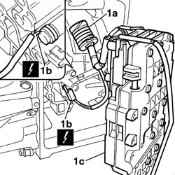
Applies to: engines: 3.0 24V V6; all production periods
- The diagram below shows the devices and sensors on the solenoid valve assembly:
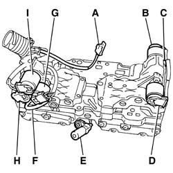
Applies to: engines: 3.0 24V V6; all production periods
Refitting
Removing- Tighten the solenoid valve assembly to the gearbox casing and fit the solenoid valve assembly connector in the housing in the gearbox casing checking that it is correctly positioned.
- Connect the electrical connection for the automatic transmission output speed sensor.
- Gearbox output speed sensor K077
- Fit the clip securing the solenoid valve assembly connector with the tab pointing downwards.
1. Connect the electrical connection for the automatic transmission input speed sensor.
- 1 - Gearbox input speed sensor K078
1. Fit the gearbox input speed sensor.
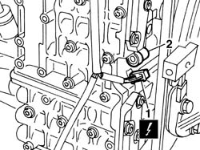
Applies to: engines: 3.0 24V V6; all production periods
1. Fit the solenoid valve assembly in the housing in the gearbox casing, taking care not to pucker the wiring.
2. Fit the pin for the lever (2a) correctly in the housing for the gear selector valve (2b).
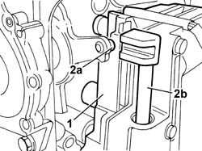
Applies to: engines: 3.0 24V V6; all production periods
1. Check that the wiring is correctly positioned in the upper and lower grooves.
2. tighten the bolts (2a) fixing the solenoid valve assembly and (2b) fixing the gearbox input speed sensor, then tighten them to the recommended torque in a spiral sequence.
 | Value - daNm | Fastening | Component | Ø  |
|---|---|---|---|---|
2a | 0,8 | Bolts | SOLENOID VALVE ASSEMBLY AUTOMATIC TRANSMISSION - R and R |
| Value - daNm | Fastening | Component | Ø  |
|---|---|---|---|---|
2b | 0,8 | Bolts | SOLENOID VALVE ASSEMBLY AUTOMATIC TRANSMISSION - R and R |
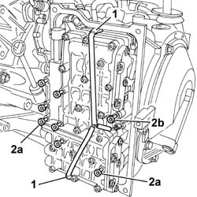
Applies to: engines: 2.0 16v, 2.0 16V JTD; all production periods
Removing
Refitting- Position a container for collecting the oil contained in the solenoid valve unit.
1. Disconnect the electrical connections for the sequence solenoid valves gently using a suitable size screwdriver.
Description | Connector | |
|---|---|---|
1 | AUTOMATIC TRANSMISSION VALVE ASSEMBLY | L050 |
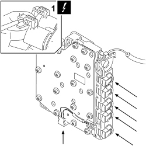
Applies to: engines: 2.0 16v, 2.0 16V JTD; all production periods
1. Undo the fixing bolts (1a), gently detach the solenoid valve unit (1b) from the transmission without tensioning the wiring and let the residual oil drain into the container.
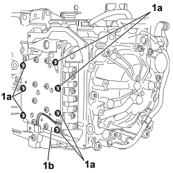
Applies to: engines: 2.0 16v, 2.0 16V JTD; all production periods
1. Disconnect the electrical connections (1a) and (1b) for the EVM modulation solenoid valves, working gently using a suitable size screwdriver then remove the gear selection solenoid valve unit from the automatic transmission complete with spring (1c).
Description | Connector | |
|---|---|---|
1 | AUTOMATIC TRANSMISSION VALVE ASSEMBLY | L050 |
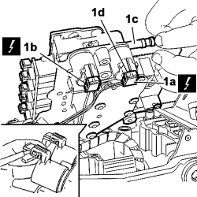
Applies to: engines: 2.0 16v, 2.0 16V JTD; all production periods
- The diagram below shows the devices and sensors on the solenoid valve assembly:
1. Sequence solenoid valve EVS1
2. Sequence solenoid valve EVS2
3. Sequence solenoid valve EVS3
4. Sequence solenoid valve EVS4
5. Sequence solenoid valve EVS5
6. Sequence solenoid valve EVS6
7. Manual valve V.M.
8. Main pressure modulating valve EVM
9. Converter pressure modulating valve (EVM coupling)
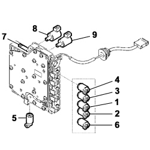
Applies to: engines: 2.0 16v, 2.0 16V JTD; all production periods
Applies to: engines: 2.0 16v, 2.0 16V JTD; all production periods
Refitting
Removing- Position the any solenoid valves that may have been removed, complete with new seals, screw in the fixing bolts and tighten to the recommended torque.
Value daNm | Fastening | Component | dia |
|---|---|---|---|
1,0 | Bolt | Automatic transmission hydraulic solenoid valves fastening |
1. Always replace the seals for the solenoid valve assembly oil ducts
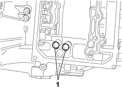
Applies to: engines: 2.0 16v, 2.0 16V JTD; all production periods
1. Position the solenoid valve assembly and connect the electrical connections (1a) and (1b) to the modulating solenoid valves.
1 | Description | Connector |
|---|---|---|
AUTOMATIC TRANSMISSION VALVE ASSEMBLY | L050 |
2. Make sure that the manual valve (2a) is correctly inserted in the tooth (A) for the toothed sector for the ball unit (2b).
- Screw in the retaining bolts without tightening.
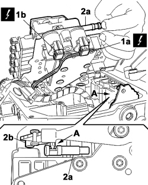
Applies to: engines: 2.0 16v, 2.0 16V JTD; all production periods
- Tighten the fixing bolts to the recommended torque following the order illustrated.
Value daNm | Fastening | Component | dia |
|---|---|---|---|
0,8 | Bolt | Automatic transmission gear selection solenoid valve assembly |
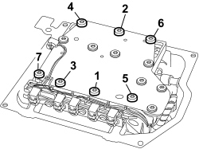
Applies to: engines: 2.0 16v, 2.0 16V JTD; all production periods
- Connect the electrical connections to the sequence solenoid valves.
Description | Connector |
|---|---|
AUTOMATIC TRANSMISSION VALVE ASSEMBLY | L050 |
Spring internal control adjustment
- Place the gear lever in position 2 (A) undo and remove bolt (A) and loosen bolt (B).
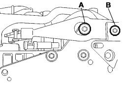
Applies to: engines: 2.0 16v, 2.0 16V JTD; all production periods
1. Fit the tool (1a) inserting the projecting part in the spring (1b) slot, having correctly positioned the ball unit (1c) on the toothed sector and tighten the knob in the opening in the bolt (A) (previous figure).
- Then tighten the bolt (B) to the recommended torque.
- Undo the knob and remove the tool.
- Screw in the bolt (A) (previous figure) and tighten to the recommended torque.
Value daNm | Fastening | Component | dia |
|---|---|---|---|
0,8 | Bolt | Automatic transmission gear selection solenoid valve assembly |
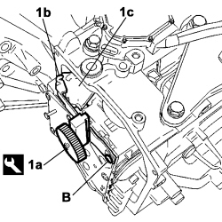
Applies to: engines: 2.0 16v, 2.0 16V JTD; all production periods
- Check the hardness of the spring by operating the gear lever.